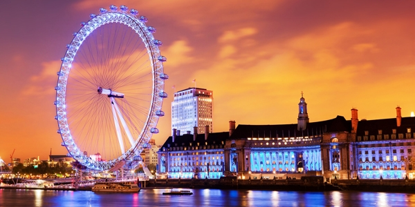
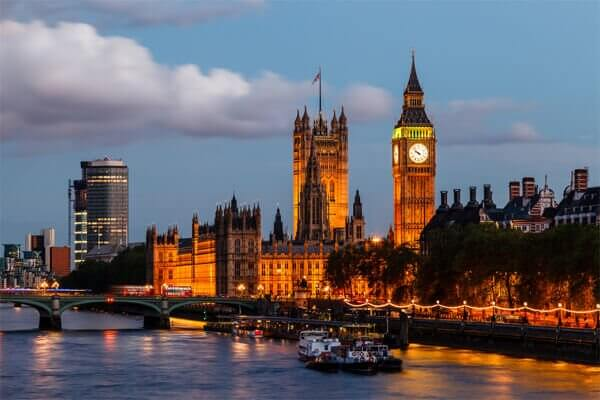
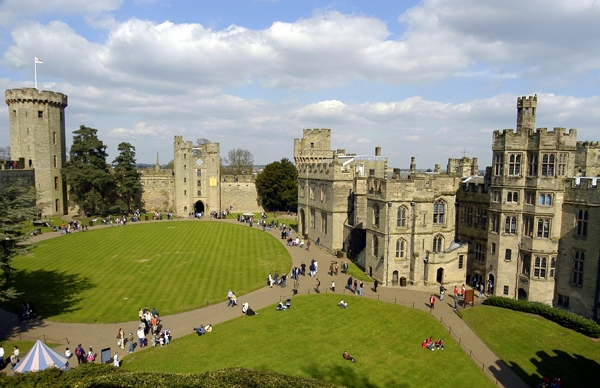
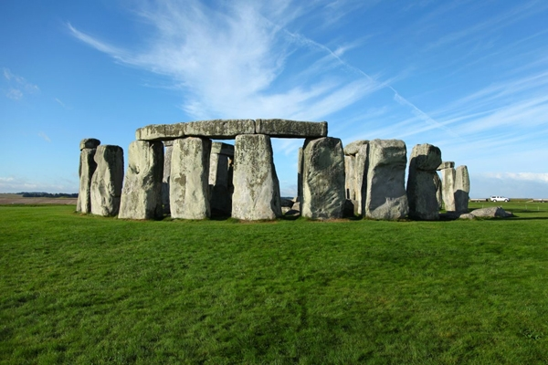

영국여행의 관문이자 수도인 런던은 오랜 역사를 자랑하는 곳입니다.
타워브릿지, 빅밴, 런던타워, 런던아이, 트라팔가 광장, 웨스터 민스터 사원,
대영박물관 등 유명한 관광명소가 가득합니다. 런던타워(Tower of London)은 영국의 역사를 살펴볼 수 있는 곳으로
한때는 궁전으로 한때는 감옥으로도 쓰인 곳입니다. 헨리 8세의 스토리가 가득하지요. 매혹적인 갑옷과 무기가 전시되어 있으며,
왕관 보석 등도 구경할 수 있습니다.


세계 3대 박물관 중 하나로 ‘박물관이 살아있다’ 영화의 배경이 되는
박물관으로 외관상으로만 봐도 박물관의 규모가 크다는 것을 짐작할 수 있습니다. 로제타 스톤, 람세스 등
유명한 전시품이 있고, 규모가 크다 보니 모든 전시물을 몇시간 안에 깊이있게 본다는 것은 사실 한계가 있습니다.
따라서 미리 박물관 홈페이지에서 층별 안내도를 확인한 후 보고싶은 전시물을 추려 동선에 맞게 관람하는 것을 권해드립니다.
센트럴 라인이나 노던라인을 이용해 Tottenham Court Road 역에서 하차하시면 됩니다.

런던을 배경으로 하는 영화나 엽서를 보면 빠지지 않고 등장하는 배경이 바로 빅벤입니다. 빅벤은 총 98m 높이에 종 무게만 14톤으로 실제로
보면 카메라 앵글에 전체 화면을 담기 어려울 정도로 어마어마한 규모입니다.
또한 빅벤 옆에는 웨스트민스터 사원과 국회의사당이 있는데, 런던의 랜드마크
중 하나로 꼽히는 곳이라 런던 여행객들이 빠지지 않고 들리는 곳입니다.

워릭성 내부에 있는 영국감옥체험, 미로찾기, 독수리쇼 등 때문인지 가족단위 여행객들이 많더군요.
런던 근교 윈저성과 같은 화려함은 없지만 영국스러운 고성의 운치를 충분히 느껴 보실 수 있는 곳이라 생각해서 추천해요.
워릭성 내 피콕 가든에서 늘 볼 수 있는 공작새도 정말 볼만한 것 중 하나이구요.
혹시 영국여행을 계획하시는 분들이 계시다면 한번쯤 들러볼 수 있는 명소 중 하나가 아닐까 싶네요.

세계 7대 불가사의 중 하나로 일컬어지는 영국 신석기 시대 유적인 스톤헨지(Stonehenge)는 세계 여러 곳에서
볼 수 있는 환상열석(環狀列石: stone circle 둥글게 늘어선 돌) 가운데 가장 유명한 건조물이다.
런던에서 서쪽으로 130㎞ 떨어진 영국 남서부 윌트셔(Wiltshire) 주 동남부의 솔즈베리 평야(Salisbury Plain:
좌표 N51 10 44, W1 49 31)에 위치해 있는데, 스톤헨지는 고대 영어로 [공중에 걸쳐 있는 돌]이라는 의미이다.